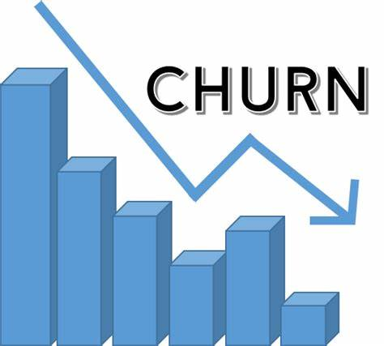

This project aims to predict customer churn in a telecommunications company. Customer churn refers to the phenomenon where customers switch to a different service provider or stop using a service altogether.
By predicting churn, the company can take proactive measures to retain customers and reduce revenue loss.


The project focuses on tasks such as standardizing the sale date format, populating missing property address data, breaking out the address into individual columns, changing values in a specific field, and removing duplicates from the dataset.
These data cleaning operations, ensures that the data is accurate, consistent, and ready for further analysis.
The "Analysis of COVID-19 Cases and Vaccinations" project focuses on analyzing data related to COVID-19 cases and vaccinations. The project utilizes two datasets: CovidDeaths$ and CovidVaccinations$ from the PortFolioProjects database.
The objective is to gain insights into the global impact of the pandemic, including total cases, total deaths, death percentages, population percentages affected, and vaccination progress.
This project focuses on retrieving and analyzing cryptocurrency data from the CoinMarketCap API. The data is collected periodically and stored in a CSV file for further analysis.
The project involves automating data collection, performing statistical calculations on the data, and visualizing the results using plots.
The Jumia Shirt Scrapper and Price Tracker project aims to scrape product information from the Jumia Nigeria website and track the prices of men's shirts over time.
The project utilizes web scraping techniques to extract relevant data from the website and stores it in a CSV file. Additionally, it includes a price tracking feature that periodically checks for updates in the product's price and appends the new data to the CSV file.
The project demonstrates proficiency in web scraping, data storage, and basic price tracking functionality.

Tableau Executive Dashboard Project for Bike Sales, AirBnB Project and Titanic Survival Count.
In this project, I transformed the collected data using power querry, created the visualizations, and finalized the dashboard.